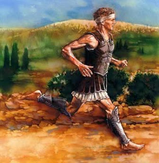
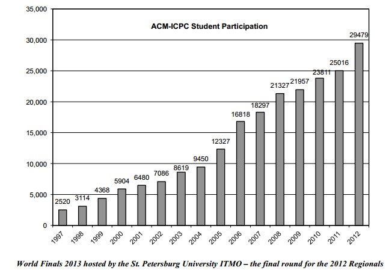

return Curiosidades;(){
i++
Por: Fellipe Augusto Alves Gurgel
Curiosidades

Feidípedes
[Fonte: 4everun ]
A Maratona Lendária:
Reza a lenda que, no ano de 490 a.C., quando os soldados atenienses partiram para a planície de Marathónas para combater os persas na Primeira Guerra Médica, suas mulheres ficaram ansiosas pelo resultado porque os inimigos haviam jurado que, depois da batalha, marchariam sobre Atenas, violariam suas mulheres e sacrificariam seus filhos. Ao saberem dessa ameaça, os gregos deram ordem a suas esposas para, se não recebessem a notícia da sua vitória em 24 horas, matar seus filhos e, em seguida, suicidarem-se.
Os gregos ganharam a batalha, mas a luta levou mais tempo do que haviam pensado, de modo que temeram que elas executassem o plano. Para evitar isso, o general grego Milcíades ordenou a seu melhor corredor, o soldado e atleta Feidípedes, que corresse até Atenas, situada a cerca de 40 km dali, para levar a notícia. Feidípedes correu essa distância tão rapidamente quanto pode e, ao chegar, conseguiu dizer apenas "vencemos", e caiu morto pelo esforço.
No entanto, Heródoto conta – no que é considerada por historiadores modernos como apenas uma versão romanceada – que, na realidade, Feidípedes foi enviado antes da batalha a Esparta e outras cidades gregas para pedir ajuda, e que tivera de correr duzentos e quarenta quilômetros em dois dias, voltando à batalha com os reforços necessários para vencer os persas. Só depois disso, teria corrido até Atenas para anunciar a vitória e então morrer pelo esforço.
Seja como for, cerca de 2400 anos mais tarde, em 1896, quando da criação dos primeiros Jogos Olímpicos da Era Moderna, Feidípides foi homenageado com a criação dessa prova, cuja distância foi estipulada em cerca de 40 km – a distância aproximada de Maratona a Atenas – mas que desde 1921 tornou-se oficialmente de 42,195 km, depois de ser disputada nesta distância em Londres 1908.
Fonte: Wikipédia
Outras competições:
International Olympiad in Informatics – IOI: competição innternacional para alunos do ensino médio. A disputa é individual;
Google Code Jam: Competição online organizada pela renomeada Google. Todas as etapas de eliminatória seguem online, e a final, geralmente é em Londres. E é uma das etapas para recrutar novos talentos para a empresa;
ICFP Programming Contest - International Conference on Functional Programming: International Conference on Functional Programming – concurso de programação internacional, que foge ao convencional: as equipes podem ter qualquer tamanho e não há restrição quanto à linguagem. Os competidores têm até 72 horas para enviar sua resposta ao problema proposto. Incentiva a inovação e prestigia os vencedores na Conferência Internacional de Programação Funcional. Em todas as edições da competição as linguagens utilizadas pelos primeiros colocados foram Cilk, Ocaml, Haskell, C++, 2D, Java, Python e F# (consideradas as linguagens de programação de escolha para hackers exigentes).
Participação dos estudantes na ICPC até 2012:

Final Mundial de 2013 sediada na Universidade de São Petersburgo - Etapa final das Regionais
[Fonte: ICPC FACT SHEET ]
Maratonas nas Instituições de Ensino:
Vide Mundo Acadêmico.
Bom, se houver qualquer dúvida, crítica, sugestão, opinião, comentário, correção, entrem em contato através das Cartas do Leitor.
Espero que tenham gostado, assim como eu gostei de escrever, rs rs. Até a próxima.
}